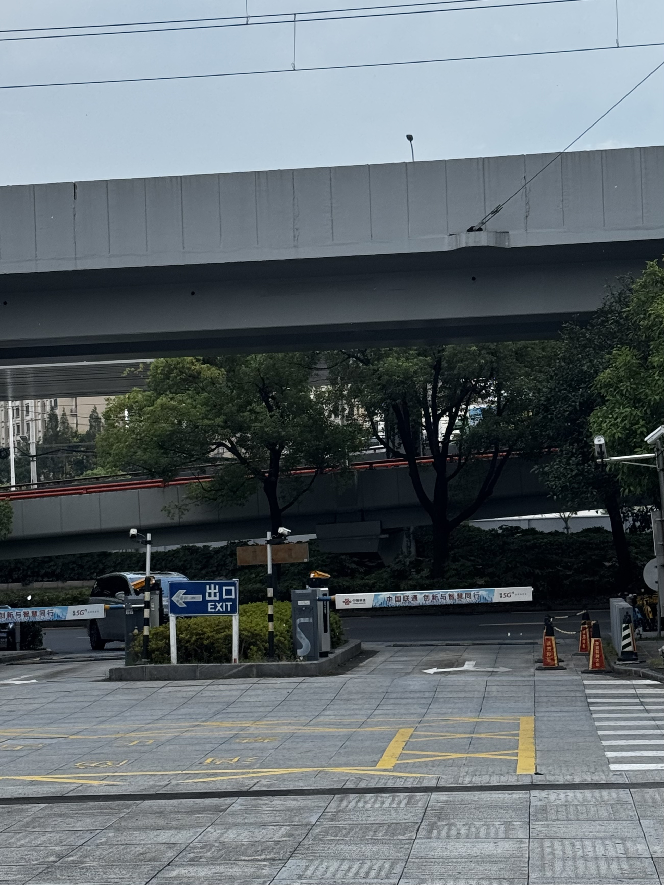
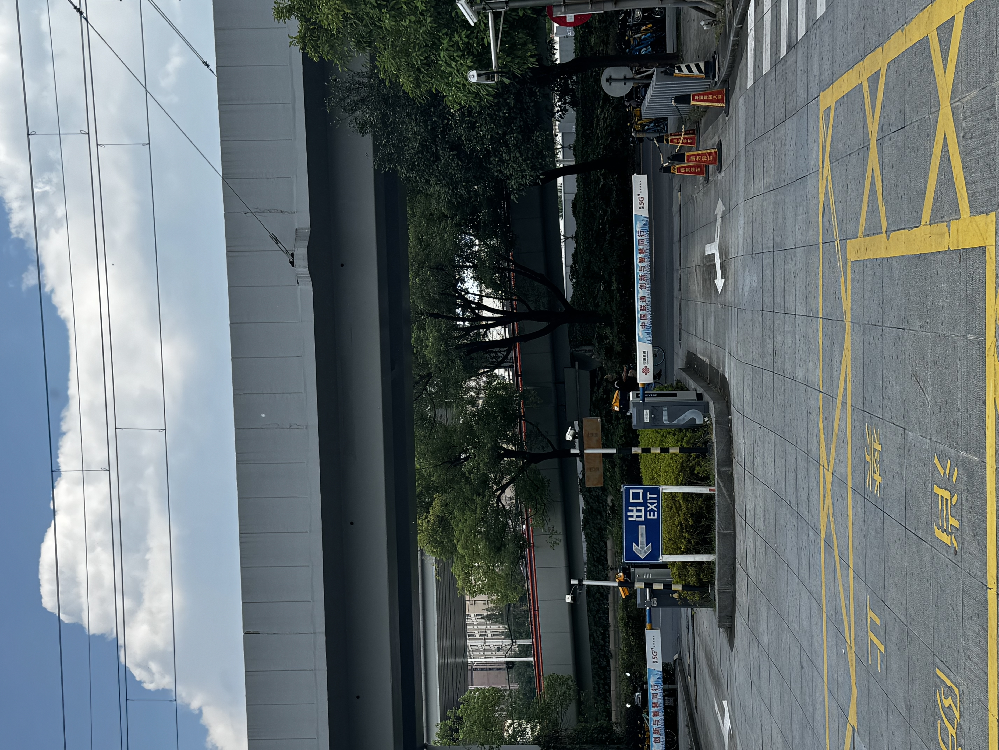
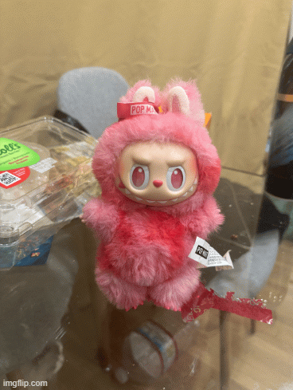

Warm-up · Project 0 · September 2025
How camera distance and focal length change perspective: a selfie series, a perspective comparison and a dolly zoom.
Distances are measured from a reference position that achieves optimal framing. Values below this baseline represent moving toward the subject, while those above indicate increasing distance. To preserve consistent facial proportions when moving backward, I correspondingly adjusted the zoom to compensate.
As I moved closer to the subject, their facial features became increasingly pronounced, with the nose appearing substantially larger in relation to the ears. Conversely, increasing the distance resulted in more compressed and balanced facial proportions. This phenomenon occurs because reduced shooting distance amplifies the relative distance variance between facial features—the nose being significantly closer to the lens than the ears. Consequently, the nose and mouth command greater visual prominence, naturally drawing the viewer's attention.


As observed in the portrait study, adjusting camera position fundamentally alters perspective, while focal length primarily affects image composition without changing spatial relationships. At closer proximity, foreground elements appear dramatically enlarged compared to background features, creating exaggerated depth perception. By increasing shooting distance, the relative scale differences diminish, producing a more balanced, compressed visual representation that appears flatter and more uniform in perspective.

The dolly zoom generates a powerful psychological disorientation by dramatically shifting background perspective while keeping the subject's size constant. This cinematic technique creates a surreal, vertigo-inducing experience where the environment appears to expand or contract around a stable focal point. It's remarkable how this seemingly straightforward combination of camera movement and focal adjustment can so profoundly manipulate our perception of three-dimensional space within a two-dimensional medium.